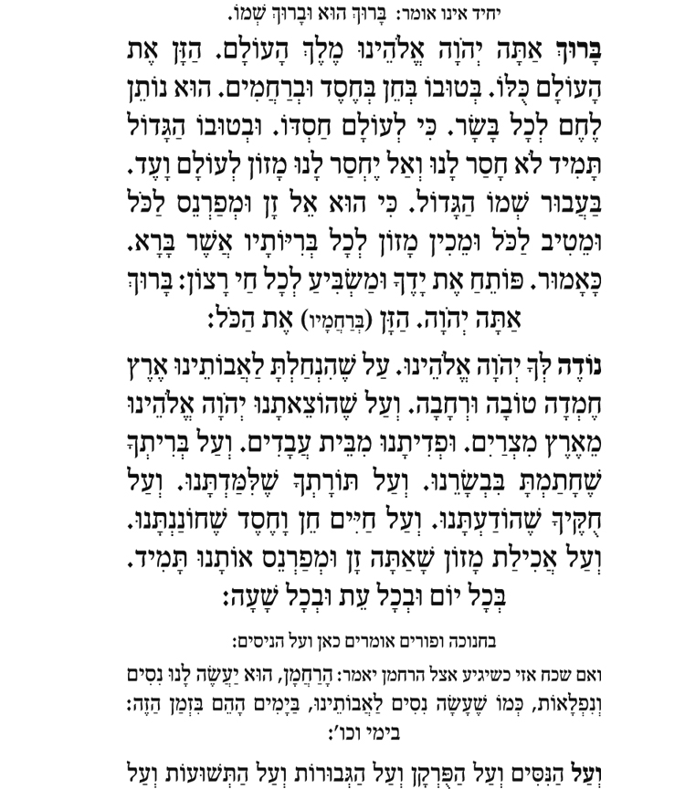

<!--
  Generated template for the ReadingPage page.

  See http://ionicframework.com/docs/components/#navigation for more info on
  Ionic pages and navigation.
-->
<ion-header>
  <ion-navbar>
    <ion-title>reading</ion-title>
  </ion-navbar>
</ion-header>

<ion-content padding>
  
  <button ion-button  color="success" (click)="completed()" >קראתי</button>

</ion-content>
